Круги Эйлера
Круги Эйлера отражают взаимосвязь между множествами.
Универсальное множество \(U\) обычно изображают в виде прямоугольника, а остальные множества – в виде кругов внутри него.
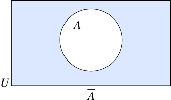
На рисунке показано множество \(A\) внутри универсального множества \(U\).
Дополнение множества \(\overline{A}\) – заштрихованная область вне круга \(A\).
Подмножества
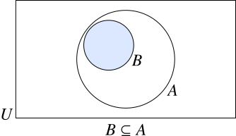
Если \(B \subseteq A\), то каждый элемент множества \(B\) также принадлежит \(A\).
Круг, изображающий \(B\), располагается внутри круга, изображающего \(A\).
Пересекающиеся множества
Рассмотрим два множества \(A\) и \(B\), которые имеют некоторые общие элементы, но при этом ни одно не является подмножеством другого.
На кругах Эйлера их изображают пересекающимися кругами.
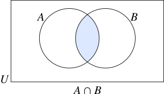
Пересечение \(A \cap B\) состоит из всех элементов, общих для \(A\) и \(B\).
Это область, где оба круга пересекаются.
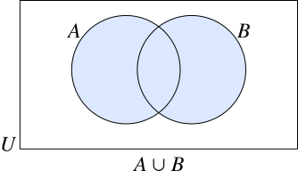
Объединение \(A \cup B\) состоит из всех элементов, которые принадлежат \(A\) или \(B\) (или обоим сразу).
Это область, включающая оба круга и их пересечение.
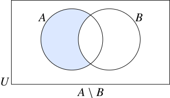
Разность \(A \setminus B\) состоит из всех элементов множества \(A\), которые не принадлежат \(B\).
Это часть круга \(A\) без области пересечения.
Непересекающиеся множества
Непересекающиеся множества не имеют общих элементов.
На кругах Эйлера их изображают непересекающимися кругами. В этом случае \(A \cap B = \varnothing\).
Задача:
Пусть \(U = \{1,\ 2,\ 3,\ 4,\ 5,\ 6,\ 7,\ 8\}\). Изобразите на кругах Эйлера следующие множества:
a) \(A = \{1,\ 3,\ 6,\ 8\}\) и \(B = \{2,\ 3,\ 4,\ 5,\ 8\}\)
b) \(A = \{1,\ 3,\ 6,\ 7,\ 8\}\) и \(B = \{3,\ 6,\ 8\}\)
c) \(A = \{2,\ 4,\ 8\}\) и \(B = \{1,\ 3,\ 5\}\)
Решение:
a)
\(A \cap B = \{3,\ 8\}\).
На кругах Эйлера эти множества изображаются двумя пересекающимися кругами. Пересечение показывает общие элементы (\(3\) и \(8\)), а непересекающиеся части кругов показывают остальные элементы.
b)
\(A \cap B = \{3,\ 6,\ 8\} = B\).
Все элементы \(B\) входят в \(A\), но \(B \ne A\), следовательно \(B \subset A\).
На кругах Эйлера это отображается кругом \(B\), полностью находящимся внутри круга \(A\).
c)
\(A \cap B = \varnothing\).
Множества \(A\) и \(B\) не имеют общих элементов.
На кругах Эйлера это показывается двумя непересекающимися кругами.
Области кругов Эйлера
Часто нас интересует только количество элементов в каждой области кругов Эйлера. В таком случае вместо самих элементов на рисунке указываем их количество в скобках.
Задача:
Используя данные круги Эйлера, найдите количество элементов в:
a) \(P\)
b) \(\overline{Q}\)
c) \(P \cup Q\)
d) \(P\), но не \(Q\)
e) \(Q \cap \overline{P}\)
f) ни в \(P\), ни в \(Q\)
Решение:
По данным на диаграмме:
a) \(|P| = 7 + 3 = 10\)
b) \(|\overline{Q}| = 7 + 4 = 11\)
c) \(|P \cup Q| = 7 + 3 + 11 = 21\)
d) \(|P \cap \overline{Q}| = 7\)
e) \(|Q \cap \overline{P}| = 11\)
f) \(|\overline{P \cup Q}| = 4\)
Задача:
Дано: \(|U| = 30\), \(|A| = 14\), \(|B| = 17\) и \(|A \cap B| = 6\). Найдите:
a) \(|A \cup B|\)
b) \(|A \cap \overline{B}|\)
Решение: Из условия известно, что \(|A \cap B| = 6\). Тогда:
Остальные элементы, которые не принадлежат ни \(A\), ни \(B\), составляют:
Следовательно:
a) \(|A \cup B| = |A \cap B| + |A \cap \overline{B}| + |\overline{A} \cap B| = 6 + 8 + 11 = 25\)
b) \(|A \cap \overline{B}| = 8\)
Задача:
В опросе участвовали 30 ребят. У 16 есть кошка, у 22 есть собака, а у 10 есть и кошка, и собака.
Сколько ребят:
a) имеют кошку, но не имеют собаки
b) имеют хотя бы одного из этих питомцев: кошку или собаку
Решение:
Обозначим: \(B\) — ребята, у которых есть кошка, \(S\) — ребята, у которых есть собака.
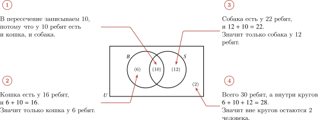
a) По диаграмме: в пересечении 10; тогда в части «только кошка» \(16 - 10 = 6\), а в части «только собака» \(22 - 10 = 12\). Значит, внутри кругов \(6 + 10 + 12 = 28\), и вне кругов остаются \(30 - 28 = 2\) человека
b) Поэтому кошка без собаки — 6, а хотя бы один питомец (кошка или собака) — 28
Диаграмма с тремя кругами
До этого мы рассматривали диаграммы Венна с двумя кругами: в них показаны два множества внутри универсального множества. Третий круг можно добавить так, чтобы он пересекал оба первых круга
Задача:
Эта диаграмма Венна состоит из трех пересекающихся кругов \(A\), \(B\) и \(C\)
Выпишите буквы, которые находятся во множествах:
i) \(A\)
ii) \(B\)
iii) \(C\)
iv) \(A \cap B\)
v) \(A \cup B\)
vi) \(B \cap C\)
vii) \(A \cap B \cap C\)
viii) \(A \cup B \cup C\)
Решение:
i) \(A = \{a, b, c, d, h, j\}\)
ii) \(B = \{a, c, d, e, f, g, k\}\)
iii) \(C = \{a, b, e, f, i, l\}\)
iv) \(A \cap B = \{a, c, d\}\)
v) \(A \cup B = \{a, b, c, d, e, f, g, h, j, k\}\)
vi) \(B \cap C = \{a, e, f\}\)
vii) \(A \cap B \cap C = \{a\}\)
viii) \(A \cup B \cup C = \{a, b, c, d, e, f, g, h, i, j, k, l\}\)
Задача:
Среди 100 старшеклассников физику любят 28 школьников, химию — 30, математику — 43, физику и химию — 8, физику и математику — 10, химию и математику — 5, все эти три предмета любят 3 школьника. Сколько старшеклассников не любят ни физику, ни химию, ни математику?
Решение:
Обозначим множества: \(F\) — любят физику, \(H\) — любят химию, \(M\) — любят математику.
Сначала заполняем области трех кругов:
- в центре \(F \cap H \cap M\) стоит 3;
- в области \(F \cap H\), но не \(M\): \(8 - 3 = 5\);
- в области \(F \cap M\), но не \(H\): \(10 - 3 = 7\);
- в области \(H \cap M\), но не \(F\): \(5 - 3 = 2\).
Теперь находим «только один предмет»:
- только физику: \(28 - (5 + 7 + 3) = 13\);
- только химию: \(30 - (5 + 2 + 3) = 20\);
- только математику: \(43 - (7 + 2 + 3) = 31\).
Внутри трех кругов всего: \(13 + 20 + 31 + 5 + 7 + 2 + 3 = 81\).
Значит, не любят ни один из трех предметов: \(100 - 81 = 19\).
Ответ: 19 школьников.
Задачи для тренировки
1. Рассмотрите диаграмму.
a) Перечислите элементы \(A\).
b) Перечислите элементы \(B\).
c) Найдите \(A \cap B\).
d) Найдите \(A \cup B\).
Ответ
a) \(A = \{1, 2, 4, 6\}\).
b) \(B = \{2, 3, 5, 6, 8\}\).
c) \(A \cap B = \{2, 6\}\).
d) \(A \cup B = \{1, 2, 3, 4, 5, 6, 8\}\).
2. Рассмотрите диаграмму.
a) Найдите \(A \setminus B\).
b) Найдите \(B \setminus A\).
c) Найдите \(\overline{A}\).
Ответ
a) \(A \setminus B = \{1, 5\}\).
b) \(B \setminus A = \{3, 4, 6\}\).
c) \(\overline{A} = \{3, 4, 6, 7\}\).
3. Рассмотрите диаграмму ( \(B \subset A\) ).
a) Перечислите элементы \(A\) и \(B\).
b) Найдите \(A \setminus B\).
c) Найдите \(\overline{B}\).
Ответ
a) \(A = \{1, 2, 3, 4, 5\}\), \(\;B = \{2, 4\}\).
b) \(A \setminus B = \{1, 3, 5\}\).
c) \(\overline{B} = \{1, 3, 5, 6, 7\}\).
4. Рассмотрите диаграмму непересекающихся множеств.
a) Найдите \(A \cap B\).
b) Найдите \(A \cup B\).
c) Найдите \(\overline{A \cup B}\).
Ответ
a) \(A \cap B = \varnothing\).
b) \(A \cup B = \{1, 2, 3, 4, 5\}\).
c) \(\overline{A \cup B} = \{6, 7, 8\}\).
5. По диаграмме найдите:
a) \(|A|\)
b) \(|B|\)
c) \(|A \cap B|\)
d) \(|A \cup B|\)
Ответ
a) \(|A| = 5 + 3 = 8\).
b) \(|B| = 4 + 3 = 7\).
c) \(|A \cap B| = 3\).
d) \(|A \cup B| = 5 + 3 + 4 = 12\).
6. По диаграмме найдите:
a) \(|A \setminus B|\)
b) \(|B \setminus A|\)
c) \(|\overline{A}|\)
d) \(|\overline{B}|\)
Ответ
a) \(|A \setminus B| = 7\).
b) \(|B \setminus A| = 5\).
c) \(|\overline{A}| = 5 + 1 = 6\).
d) \(|\overline{B}| = 7 + 1 = 8\).
7. По диаграмме ( \(B \subset A\) ) найдите:
a) \(|A|\)
b) \(|B|\)
c) \(|A \cup B|\)
d) \(|\overline{A}|\)
Ответ
a) \(|A| = 9 + 4 = 13\).
b) \(|B| = 4\).
c) \(|A \cup B| = 13\).
d) \(|\overline{A}| = 3\).
8. По диаграмме найдите:
a) \(|A|\)
b) \(|B|\)
c) \(|A \cap B|\)
d) \(|\overline{A \cup B}|\)
Ответ
a) \(|A| = 2 + 6 = 8\).
b) \(|B| = 1 + 6 = 7\).
c) \(|A \cap B| = 6\).
d) \(|\overline{A \cup B}| = 5\).
Нарисуйте и заштрихуйте область у себя в тетради.
9. Заштрихуйте область \(A \cap B\).
Ответ
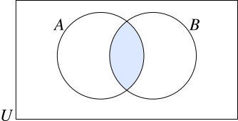
10. Заштрихуйте область \(A \cup B\).
Ответ
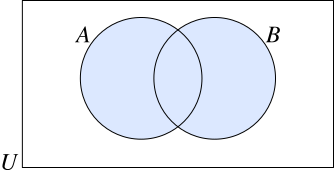
11. Заштрихуйте область \(A \setminus B\).
Ответ
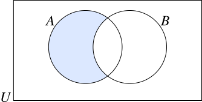
12. Заштрихуйте область \(B \setminus A\).
Ответ
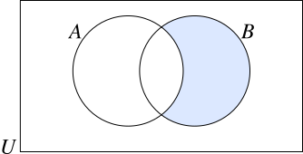
13. Заштрихуйте область \(\overline{A}\).
Ответ
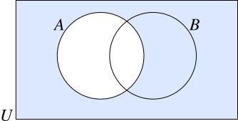
14. Заштрихуйте область \(\overline{A \cup B}\).
Ответ
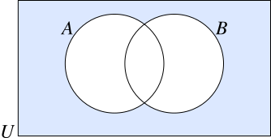
15. В опросе участвовали 36 учеников. 20 занимаются футболом, 18 занимаются плаванием, а 9 занимаются и футболом, и плаванием.
a) Заполните диаграмму Венна.
b) Сколько учеников:
i) занимаются футболом, но не плаванием;
ii) занимаются хотя бы одним из этих видов спорта?
Ответ
a) Только футбол: \(20 - 9 = 11\), только плавание: \(18 - 9 = 9\), пересечение: 9, вне кругов: \(36 - (11 + 9 + 9) = 7\).
b)
i) 11.
ii) \(11 + 9 + 9 = 29\).
16. В классе 42 ученика. 25 любят математику, 19 любят информатику, а 8 любят оба предмета.
a) Заполните диаграмму Венна.
b) Сколько учеников:
i) любят математику, но не информатику;
ii) любят хотя бы один из этих предметов?
Ответ
a) Только математика: \(25 - 8 = 17\), только информатика: \(19 - 8 = 11\), пересечение: 8, вне кругов: \(42 - (17 + 8 + 11) = 6\).
b)
i) 17.
ii) \(17 + 8 + 11 = 36\).
17. На улице 50 домов. В 28 домах есть домофон, в 31 доме есть видеокамера, а в 14 домах есть и домофон, и видеокамера.
a) Заполните диаграмму Венна.
b) Сколько домов:
i) имеют домофон, но не имеют видеокамеры;
ii) имеют хотя бы одно из этих устройств: домофон или видеокамеру?
Ответ
a) Только домофон: \(28 - 14 = 14\), только видеокамера: \(31 - 14 = 17\), пересечение: 14, вне кругов: \(50 - (14 + 14 + 17) = 5\).
b)
i) 14.
ii) \(14 + 14 + 17 = 45\).
18. Среди 120 школьников английский язык изучают 54, немецкий — 41, французский — 47. Английский и немецкий изучают 18, английский и французский — 20, немецкий и французский — 15, все три языка изучают 7 школьников.
Сколько школьников:
i) не изучают ни один из этих языков;
ii) изучают ровно один язык?
Ответ
Обозначим: \(A\) — английский, \(N\) — немецкий, \(F\) — французский.
Сначала заполняем центр: \(A \cap N \cap F = 7\).
Попарные пересечения без третьего языка:
- \(A \cap N\), но не \(F\): \(18 - 7 = 11\);
- \(A \cap F\), но не \(N\): \(20 - 7 = 13\);
- \(N \cap F\), но не \(A\): \(15 - 7 = 8\).
Теперь «только один язык»:
- только \(A\): \(54 - (11 + 13 + 7) = 23\);
- только \(N\): \(41 - (11 + 8 + 7) = 15\);
- только \(F\): \(47 - (13 + 8 + 7) = 19\).
Внутри трех кругов: \(23 + 15 + 19 + 11 + 13 + 8 + 7 = 96\).
i) Не изучают ни один язык: \(120 - 96 = 24\).
ii) Ровно один язык: \(23 + 15 + 19 = 57\).
19. В кружках участвуют 90 учеников. Робототехнику посещают 35, программирование — 48, дизайн — 32. Робототехнику и программирование посещают 16, робототехнику и дизайн — 12, программирование и дизайн — 14, все три кружка — 6.
Сколько учеников:
i) посещают только программирование;
ii) посещают как минимум два кружка;
iii) не посещают ни один из этих трех кружков?
Ответ
Обозначим: \(R\) — робототехника, \(P\) — программирование, \(D\) — дизайн.
Центр: \(R \cap P \cap D = 6\).
Попарные пересечения без третьего:
- \(R \cap P\), но не \(D\): \(16 - 6 = 10\);
- \(R \cap D\), но не \(P\): \(12 - 6 = 6\);
- \(P \cap D\), но не \(R\): \(14 - 6 = 8\).
Области «только один кружок»:
- только \(R\): \(35 - (10 + 6 + 6) = 13\);
- только \(P\): \(48 - (10 + 8 + 6) = 24\);
- только \(D\): \(32 - (6 + 8 + 6) = 12\).
Внутри кругов всего: \(13 + 24 + 12 + 10 + 6 + 8 + 6 = 79\).
i) Только программирование: 24.
ii) Как минимум два кружка: \(10 + 6 + 8 + 6 = 30\).
iii) Не посещают ни один: \(90 - 79 = 11\).
20. Среди 150 взрослых автобусом пользуются 68 человек, метро — 74, трамваем — 59. Автобусом и метро пользуются 30, автобусом и трамваем — 26, метро и трамваем — 24, всеми тремя видами транспорта — 12.
Сколько человек:
i) не пользуются ни одним из этих видов транспорта;
ii) пользуются ровно двумя из них?
Ответ
Обозначим: \(B\) — автобус, \(M\) — метро, \(T\) — трамвай.
Центр: \(B \cap M \cap T = 12\).
Попарные пересечения без третьего:
- \(B \cap M\), но не \(T\): \(30 - 12 = 18\);
- \(B \cap T\), но не \(M\): \(26 - 12 = 14\);
- \(M \cap T\), но не \(B\): \(24 - 12 = 12\).
Области «только один вид транспорта»:
- только \(B\): \(68 - (18 + 14 + 12) = 24\);
- только \(M\): \(74 - (18 + 12 + 12) = 32\);
- только \(T\): \(59 - (14 + 12 + 12) = 21\).
Внутри кругов всего: \(24 + 32 + 21 + 18 + 14 + 12 + 12 = 133\).
i) Не пользуются ни одним: \(150 - 133 = 17\).
ii) Ровно двумя: \(18 + 14 + 12 = 44\).
По материалам:
Michael Haese, Sandra Haese, Mark Humphries, Edward Kemp, Pamela Vollmar. Mathematics for the International Student 10E (MYP 5 Extended). Haese Mathematics.